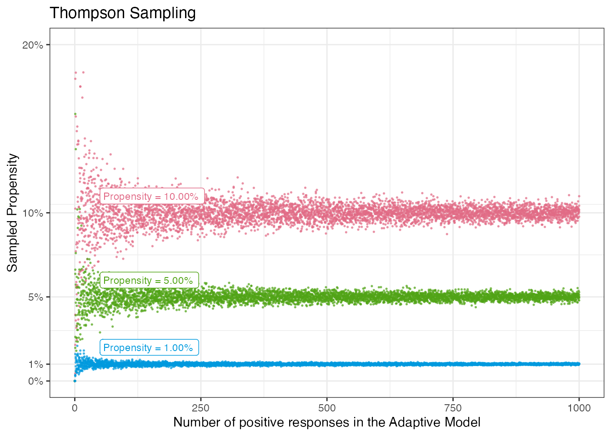
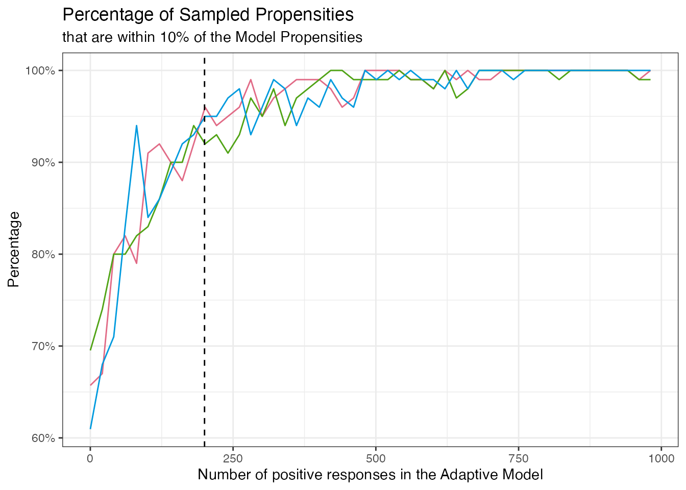
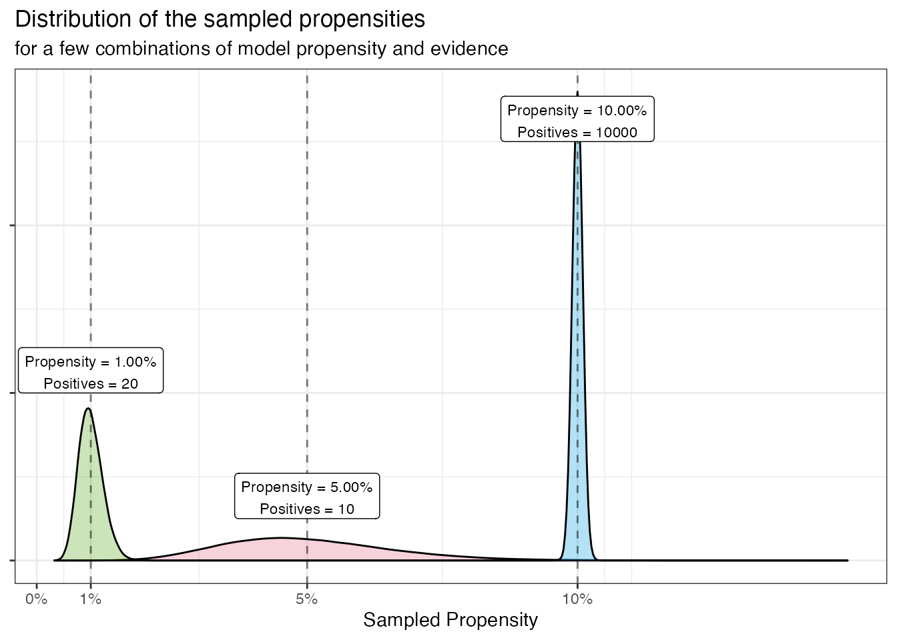
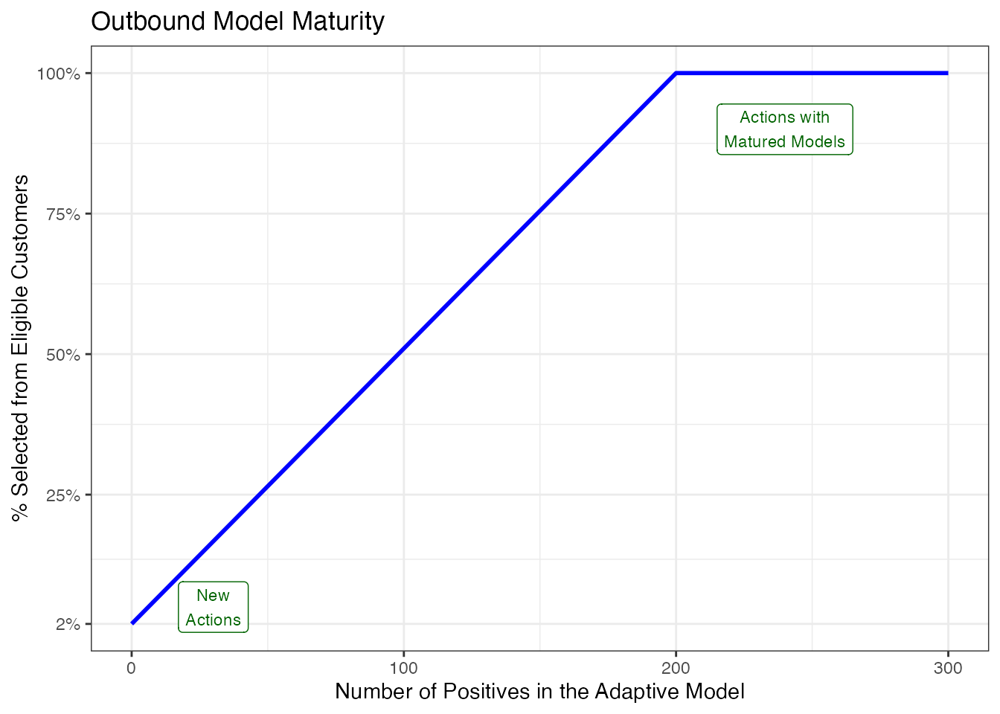
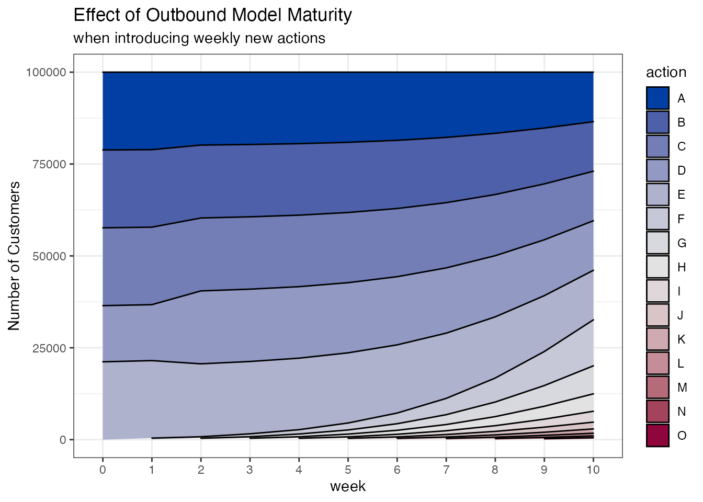
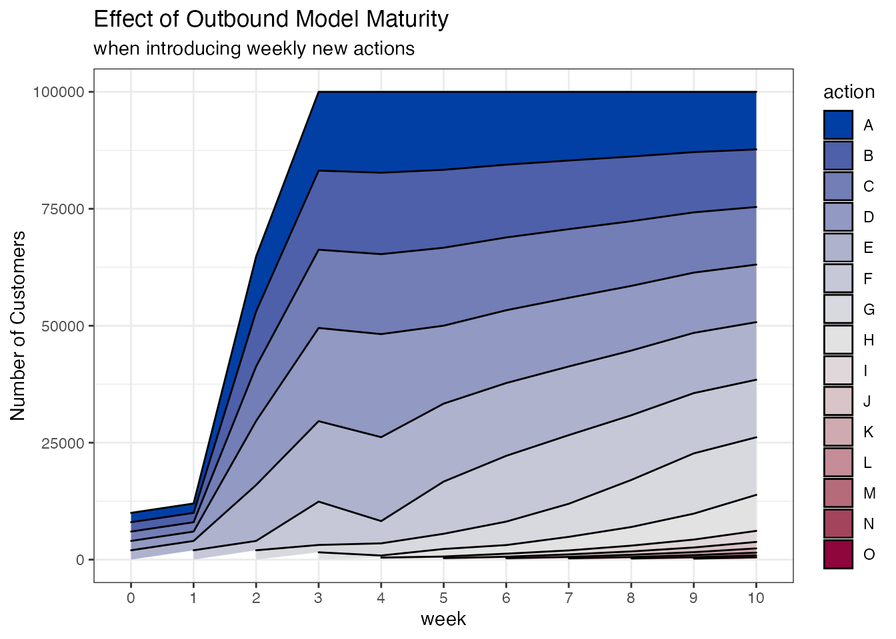

thompson-sampling-explained.RmdPega Customer Decision Hub uses a mechanism called Thompson Sampling, which is a method to sample the propensities from a distribution that centers around the model propensity. The width of the distribution depends on the evidence the model has seen. For new actions the propensities are random between 0 and 1. When the model gathers more evidence, the sampled propensities get closer to the model propensities.
This mechanism helps in a few different ways. For outbound channels, when multiple new actions are launched, they will all have the same 0.5 propensity (that is where a new model starts). Thompson Sampling effectively adds a bit of noise so it is not always the same new action that gets selected. For both inbound and outbound channels, Thompson Sampling helps to add some extra “exploration” to the models in the early phases.
See also:
The following plot shows how the spread of sampled propensities narrows with more responses received by the models. We show simulated results for a few different model propensities.

To illustrate the fact that the Thompson Sampled propensities quickly converge to the model propensities, below plot shows the percentage of sampled propensities that are within 10% of the original model propensity.
For new models (no responses) that is around 50% but at about 200 positive responses, around 90% of the sampled propensities are within 10% of the original model propensities. After 500 positive responses almost all of the sampled propensities are within that range.
The colors indicate the same base propensities as before, but as can be seen, the convergence rate is independent of the base propensities.

In principle, Thompson Sampling is based on the \(\beta\)-distribution (https://en.wikipedia.org/wiki/Beta_distribution) with “positive” and “negative” responses as the shape parameters.
But for practical reasons, instead of using \(\beta(positives, negatives)\), we approximate this with \(\beta(p*evidence, (1-p)*evidence)\).
With https://agilestudio.pega.com/prweb/AgileStudio/app/agilestudio/bugs/BUG-803575 we will change the implementation in NBAD to use the positives directly so it will become \(p + \beta(positives, negatives) - \frac{positives}{evidence}\) with \(evidence = positives + negatives\).
Here we show the distribution for a few combinations of model propensity and evidence. Note that the distributions do not have their top at exactly the model propensity. This is because the beta distribution gives values in the range 0..1 so for the (typical) small propensity values, the distribution is somewhat right-tailed.

Thompson Sampling is related to the concept of Outbound Model Maturity. In outbound channels, we limit the reach of new actions to avoid sending too many actions “blindly” to customers. As more feedback is accumulated, the percentage of the customers that can receive the new actions is increased.
We start with 2% of the population for new actions and scale that linearly to 100% until we reach a threshold of 200 positive responses. This is illustrated by the following plot:
#> Warning: Using `size` aesthetic for lines was deprecated in ggplot2 3.4.0.
#> ℹ Please use `linewidth` instead.
#> This warning is displayed once every 8 hours.
#> Call `lifecycle::last_lifecycle_warnings()` to see where this warning was
#> generated.
Suppose we start with 5 actions and introduce a new action every week. We receive feedback after a week, so the reach of the new actions ramps up after each week until it reaches the 200 positives and is then mixed with the other actions.
The plot below illustrates how many customers (out of a hypothetical base of 100000) get the different actions.
Of course, in an actual implementation, there usually are more factors that are considered whether or not to give an action. This includes volume constraints, propensity thresholding and other factors.

If at day zero all actions are new, it depends on the amount of available actions.
If there are sufficient actions, then all customers may receive one, but the targeting will not be very personalized. The distribution will still look even.
If there are few actions, then the model maturity capping may have the effect that initially not everyone will get an action. As the models mature and become more targeted, this will change.
